1과목: 재료역학
1. 아래 그림과 같은 보에 대한 굽힘 모멘트 선도로 옳은 것은?
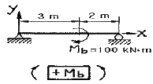
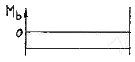
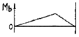
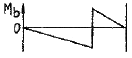
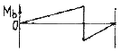
2. 지름이 d이고 길이가 L인 환축에 비틀림 모멘트가 작용하여 비틀림각 ø가 발생하였다. 이때 환축의 최대전단응력 τ은 얼마인가? (단, G는 전단탄성계수)
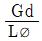
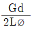
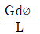
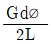
3. 어떤 축이 동력마력 H(KW)를 전달할 때 비틀림 모멘트T(Nㆍm)가 발생하였다면 이 때 축의 회전수를 구하는 식은?
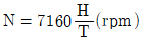
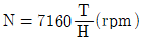
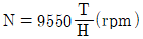
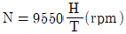
4. 길이 5m인 양단고정 보의 중앙에서 집중하중이 작용할 때 최대 처짐이 10cm 발생하였다면, 같은 조건에서 양단 지지보로 하면 처짐은 얼마가 되겠는가?
5. 바깥지름 d2=30cm, 안지름 d1=20cm의 속이 빈 원형 단면의 단면 2차모멘트는?
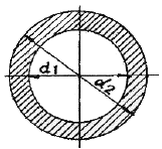
6. 안지름 80cm의 얇은 원통에 내압 1MPa이 작용할 때 원통의 최소 두께는 몇 mm 인가? (단, 재료의 허용응력은 80MPa이다.)
7. 그림과 같은 정사각형 판이 변형되어, 네 변이 직선을 유지한 채 A, B 접이 모두 수평 방향 우측으로 1 mm 만큼 이동되었다. D점에서의 전단변형률 γxy는?
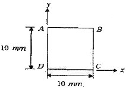
8. 외팔보 AB의 자유단에 브라켓 BCD가 붙어 있으며 D점에 하중 P가 작용하고 있다. B점에서의 처짐이 0이 되기 위한 a/L의 비는 얼마인가?
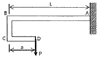
9. 지름이 50mm이고 길이가 200mm인 시편으로 비틀림 실험을 하여 얻은 결과, 토크 30.6 Nㆍm에서 전 비틀림 각이 7°로 기록되었다. 이 재료의 전단 탄성계수 G는 약 몇 MPa 인가?
10. σx=σy=0. τxy=0.1GPa 일 때, 두 주응력의 크기 σ1, σ2는?
11. 다음 그림에서 최대 굽힘 응력은?
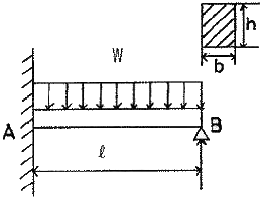
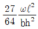
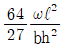
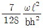
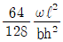
12. 단면의 형상이 일정한 재료에 노치(notch)부분을 만들어 인장할 떄 응력의 분포 상태는?
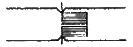
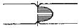
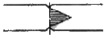
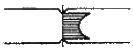
13. 봉의 온도가 25℃일 때 양쪽의 강성지점들에 끼워 맞추어져 있다. 봉의 온도가 100 ℃일 때 AC 부분의 응력은 몇 MPa 인가? (단, 봉 재료의 E=200 GPa, α=12×10-6/℃, L1=L2=0.5m, A1=1000mm2, A2=500mm2)
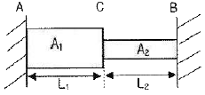
14. 그림과 같은 단순보에서 보 중앙의 처짐으로 옳은 것은? (단, 보의 굽힘 강성 EI는 일정하고, M0는 모멘트, ℓ은 보의 길이이다.)
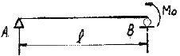
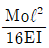
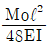
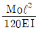
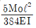
15. 외팔보의 자유단에 하중 P가 작용할 때, 이 보의 굽힘에 의한 탄성 변형에너지를 구하면? (단, 보의 굽힘강성 EI는 일정하다.)
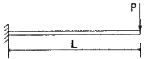
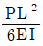
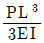
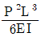
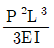
16. b × h =20cm × 40cm의 외팔보가 두가지 하중을 받고 있을 때 분포하중 ω를 얼마로 하면 안전하게 지지할 수 있는가? (단, 허용굽힘응력 σa=10MPa이다.)
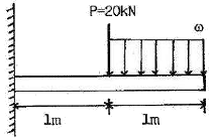
17. 직경 10cm,길이 3m인 양단의 고정된 2개의 원형기둥에 가해줄 수 있는 최대하중은? (단, E=200000MPa, σr=280MPa)
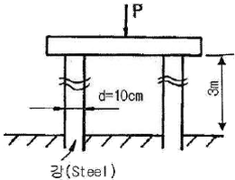
18. 포아송(Poission)비가 0.3인 재료에서 탄성계수(E)와 전단탄성계수(G)의 비(E/G)는?
19. 그림에서 윗면의 지름이 d, 높이가 ℓ인 원추형의 상단을 고정할 때 이 재료에 발생하는 신장량 δ의 값은? (단, 단위 체적당의 중량을 γ, 탄성계수를 E라 함)
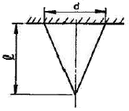
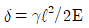
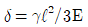
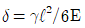
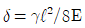
20. 그림과 같은 구조물에서 AB 부재에 미치는 힘은?
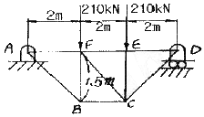
2과목: 기계열역학
21. 외부에서 받은 열량이 모두 내부에너지 변화만을 가져오는 완전가스의 상태변화는?
22. 질량 4kg의 액체를 15℃에서 100℃까지 가열하기 위해 714 kJ의 열을 공급하였다면 액체의 비열은 몇 J/kgㆍK인가?
23. 50℃, 25℃, 10℃의 온도인 3가지 종류의 액체 A, B, C가 있다. A와 B를 동일중량으로 홉합하면 40℃로 되고, A와 C를 동일 중량으로 혼합하면 30℃로 된다. B와 C를 동일중량으로 혼합할 때는 몇 ℃로 되겠는가?
24. 응축기 온도가 40℃이고, 증발기 온도가-20℃인 이상 냉동사이클의 성능계수(COP)는?
25. 상태 1에서 경로 A를 따라 상태 2로 변화하고 경로 B를 따라 다시 상태 1로 돌아오는 사이클이 있다. 아래의 사이클에 대한 설명으로 틀린 것은?
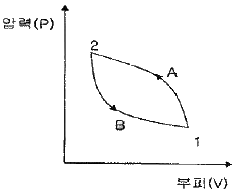
26. 다음 P-h선도를 이용한 중기압축 냉동기의 성능계수는 얼마인가?
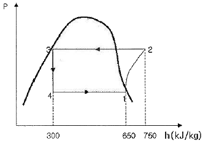
27. 이상기체의 내부에너지는 무엇의 함수인가?
28. 할 밀폐계가 190kJ의 열을 받으면서 외부에 20KJ의 일을 한다면 이 계의 내부에너지의 변화는 약 얼마인가?
29. 시속 30km로 주행하고 있는 질량 306kg의 자동차가 브레이크를 밟았더니 8.8m애서 정지했다. 베어링 마찰을 무시하고 브레이크에 의해서 제동된 것으로 보았을 때, 브레이크로부터 발생한 열량은 얼마인가? (단, 차륜과 도로면의 마찰계수는 0.4로 한다.)
30. 랭킨 사이클을 터빈 입구 상태와 응축기 압력을 그대로 두고 사이클로 바꾸었을 때 랭킨 사이클과 비교한 재생 사이클의 특징에 대한 설명으로 틀린 것은?
31. 밀폐계에서 기체의 압력이 100KPa으로 일정하게 유지 되면서 체적이 1m3에서 2m3으로 증가되었을 때 옳은 설명은?
32. 비열이 0.475kJ/kgㆍK인 철 10kg을 20℃에서 80℃로 올리는데 필요한 열량은 몇 kJ인가?
33. 어느 발명가가 바닷물로부터 매시간 1800kJ의 열량을 공급받아 0.5kW 출력의 열기관을 만들었다고 주장한다면, 이 사실은 열역학 제 및 법칙에 위반 되겠는가?
34. 과열과 과냉이 없는 중기압축 냉동사이클에서 응축온도가 일정하고 증발온도가 낮을수록 성능계수는 어떻게 하겠는가?
35. 어떤 유체의 밀도가 741kg/m3이다. 이 유체의 비체적은 약 몇 m3/kg인가?
36. 공기 10kg이 정적 과정으로 20℃에서 250℃까지 온도가 변하였다. 이 경우 엔트로피의 변화량은? (단, 공기의 Cv=0.717 kJ/kgㆍK이다.)
37. 100℃와 50℃ 사이에서 작동되는 가역열기관의 최대 열효율은 약 얼마인가?
38. 27kPa의 압력차는 수은주로 어느 정도 높이가 되겠는가? (단, 수은의 밀도는 13590kg/m3이다.)
39. 어떤 작동 유체가 550K의 고열원으로부터 20kJ의 열량을 공급받아 250K의 저열원에 14kJ의 열량을 방출할 때 이 사이클은?
40. 냉동기의 효율은 성능 계수로 나타낸다. 냉동기의 성능 계수에 대한 설명 중 잘못된 것은?
3과목: 기계유체역학
41. 다음 중 무차원에 해당하는 것은?
42. 4℃ 물의 체적 탄성계수는 2.0×109 N/m2이다. 이 물에서의 음속은 약 몇 m/s인가?
43. 바다 속 임의의 한 지점에서 측정한 계기압력이 98.7MFa이다. 이 지점의 깊이는 몇 m인가? (단, 해수의 비중량은 10kN/m3이다.)
44. 수면의 높이가 지면에서 h인 물통 벽의 측면에 구멍을 뚫고 물을 지면으로 분출시킬 때 지면을 기준으로 물이 가장 멀리 떨어지게 하는 구멍의 높이는?
45. 30명의 흡연가가 피우는 담배연기를 처리할 수 있는 흡연실에서 1인당 최소 30L/s의 신선한 공기를 필요로 할 때, 공급되어야 할 공기의 최소 유량은 몇 m3/s인가?
46. 원관내를 완전한 층류로 흐를 경우 관마찰계수 f는?
47. 그림과 같은 사이펀에 물이 흐르고 있다. 사이펀의 안지름은 5cm이고, 물탱크의 수면은 항상 일정하게 유지된다고 가정한다. 수면으로부터 출구 사이의 총 손실 수두가 1.5m이면, 사이펀을 통해 나오는 유량은 약 몇 m3/min인가?
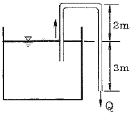
48. 유속 V인 균일 유동장애 놓인 물체 둘레의 순환이 Γ(Kutta-Joukowski의 정리)은? (단, 유체의 밀도는 ρ라 한다.)
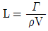
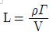
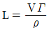
49. 다음 중 경계층에서 유동바리 현상이 발생할 수 있는 조건은?
50. 밀도가 ρ1, ρ2인 두 종류의 액체 속에 완전히 잠긴 물체 무게를 스프링 저울로 측정한 결과 각각 W1, W2이었다. 공기 중에서 이 물체의 무게 G는?
51. 다음 그림에서 관입구의 부차적 손실계수 K는? (단, 관의 안지름은 20mm, 관마찰계수는 0.0188이다.)
52. 2차원 유동 중 속도포텐셜이 존재하는 것은? (단 이다.)
53. 압력과 밀도로 각각 P, ρ할 때 의 차원은? (단, M, L, T는 각각 질량, 길이, 시간의 차원을 나타낸다.)
54. 유체 속에 잠겨있는 경사진 판의 윗면에 작용하는 압력힘의 작용점에 대한 설명 중 맞는 것은?
55. 다음 중 원관 내 층류유동의 전단응력분포로 옳은 것은?
56. 직경이 30mm이고, 틈새가 0.2mm인 슬라이딩 베어링이 1800rpm으로 회전할 때 윤활유에 작용하는 전단응력은 약 몇 Pa 인가? (단, 윤활유의 점성계수 μ=0.38Nㆍs/m2이다.)
57. 유량계수가 0.75 이고, 옥지름이 0.5m인 벤투리미터를 사용하여 안지름이 1m인 송유관 내의 유량을 측정하고 있다. 벤투리 입구와 목의 압력차가 수은주 80mm이면 기름의 질량유량은 몇 kg/s인가? (단, 기름의 비중은 0.9, 수은의 비중은 13.6이다.)
58. 길이 125mn, 속도 9m/s인 선박의 모형실험을 길이 5m인 모형선으로 프루드(Froude), 상사가 성립되게 실험하려면 모형선의 속도는 약 몇m/s로 해야 하는가?
59. 그림과 같이 유량 Q=0.03m3/s의 물 분류가 V=40m/s의 속도로 곡면판에 충돌하고 있다. 판은 고정되어 있고 휘어진 각도가 135°일 때 분류로부터 판이 받는 충격력의 크기는 약 몇 N인가?(오류 신고가 접수된 문제입니다. 반드시 정답과 해설을 확인하시기 바랍니다.)
60. 2차원 유동장에서 속도벡터가 일 때 점(3, 5)을 지나는 유선의 기울기는? (단, 는 x, y 방향의 단위벡터이다.)
4과목: 기계재료 및 유압기기
61. 강에서 열처리 조직으로 경도가 가잔 큰 것은?
62. 자기변태의 설명으로 옳은 것은?
63. 질화법과 침탄법을 비교 설명한 것으로 틀린 것은?
64. 델타 메탈 이라고도 하며 강도가 크고 내식성아 좋아 광산 기계, 선박용 기계, 화학 기계 등에 사용되는 것은?
65. 탄소강에 미치는 인(P)의 영향으로 옳은 것은?
66. 주조성, 가공성, 내마멸성 및 강도가 우수하고 인성, 연성, 가공성 및 경화능 등이 강의 성질과 비슷하며 자동차용 주물로 가장 적합한 주철은?
67. 고속도공구강에서 요구되는 일반적 성질과 관련이 없는 것은?
68. 지름 15mm의 연강 봉에 5000kgf 의 인장하중이 작용할 때 생기는 응력은 약 몇 kgf/mm2 인가?
69. 일반적인 주철의 장점이 아닌 것은?
70. 톱날이나 줄의 재료로 가장 적합한 합금은?
71. 전기모터나 내연기관 등의 원동기로부터 공급받은 동력을 기계적 유압에너지로 변환시켜 작동매체인 작동유(압축유)를 통하여 유압계통에 에너지를 가해주는 기기는?
72. 다음 중 압력단위의 환산이 잘못된 것은?
73. 유압유를 이용하여 진동을 흡수하거나 충격을 완화시키는 기기는?
74. 기름의 압축률이 6.8×10-5cm2/kg일 때 압력을 0에서 100kgf/cm2 까지 압축하면 체적은 몇 %감소하는가?
75. 작동유가 갖고 있는 에너지를 잠시 저축했다가 이것을 이용하여 완충작용도 할 수 있는 부품은?
76. 유압기기의 통로(또는 관로)에서 탱크(또는 매니폴드 등)로 돌아오는 액체 또는 액체가 돌아오는 현상을 나타내는 용어는?
77. 다음 기호 중 유량계를 표시하는 것은?
78. 유압회로에서 정규 조작방법에 우선하여 조작할 수 있는 대체 조작수단으로 정의되는 에너지 제어 조작방식 일반에 관한 용어는?
79. 오일 탱크의 구비 조건에 관한 설명으로 옳지 않은 것은?
80. 구조가 가장 간단하며 값이 싸고 유압유에 섞인 이물질에 의한 고장 발생이 적고 가혹한 조건에 잘 견디는 유압 모터로 가장 적합한 것은?
5과목: 기계제작법 및 기계동력학
81. 상온에서 가공할 수 없는 내열합금이나 담금질 강과 같은 강한 재질의 고온가공(hot machining) 특징이 아닌 것은?
82. 서보제어방식 중 아래 그림과 같이 모터에 내장된 펄스 제너레이터에서 속도를 검출하고, 엔코더에서 위치를 검출하여 피드백하는 제어방식은?
83. 절삭유제를 사용하는 목적이 아닌 것은?
84. 삼침법으로 나사를 측정할 때 유료지름(mm)은 약 얼마인가? (단, 외측마이트로미터로 측정한 외경은 38.256mm, 피치 3mm의 나사이며, 준비된 핀의 지름은 1.8mm로 한다.)
85. 보석, 유리, 자기 등을 정밀하게 가공하는데 가장 적합한 가공 방법은?
86. 용접봉의 기호 중 E4324에서 세 번째 숫자 2의 표시는 용접자세를 나타낸다. 어떠한 자세인가?
87. 주물의 후처리 작업이 아닌 것은?
88. 곧은 날을 갖는 직선 절단기에서 전단각에 관한 설명으로 틀린 것은?
89. 프레스가공에서 전단가공에 해당하는 것은?
90. 두께 50mm의 연강판을 압연 롤러를 통과시켜 40mm가 되었을 때 압하율(%)은?
91. 강체의 평면운동에 대한 설명 중 옳지 않은 것은?
92. 질량 30kg의 물체를 담은 두레박 B가 레일을 따라 이동하는 크레인 A에 수직으로 매달려 이동하고 있다. 매단 줄의 길이는 6m이다. 일정한 속도로 이동하던 크레인이 갑자기 정지하자, 두레박 B가 수평으로 3m까지 흔들렸다. 크레인 A의 이동속력은 몇 m/s인가?
93. 계의 등가 스프링 상구 값은 어떤 것인가?
94. 스프링으로 지지되어 있는 질량의 정적처짐이 0.⑤cm 일 때 스프링의 고유진동수는 얼마인가?
95. 총포류의 반동을 감소시키는 제동장치는 피스톤과 포신의 이동속도(ｕ)에 비례하여 감속하게 된다. 즉, 가속도 a=-kv의 관계로 나타날 때 속도 ｕ를 시간 t에 대한 함수로 나타내는 수식은? (단, 초기 속도는 ｕ0, 초기 위치는 0이라고 가정한다.)
96. 각각 중량이 10kN인 객차 10량이 2m/s2의 가속도로 직선주로를 달리고 있은 때, 5번째와 6번째 차량사이의 연결부에 작용하는 힘은?
97. 계의 고유진동수에 영향을 미치지 않는 것은?
98. 1자유도 시스템 A, B의 전달률을 나타낸 그래프에서 두 시스템의 감쇠비 ξ의 관계로 옳은 것은?
99. 길이 l, 질량 m인 균일한 막대가 의 각속도로 회전하고 있다. 막대의 운동에너지는 얼마인가?
100. 20m/s의 같은 속력으로 달리던 자동차 A, B가 교차로에서 직각으로 충돌하였다. 충돌 직후 자동차A의 속력은 몇 m/s 인가? (단, 자동차 A, B의 질량은 동일하며 반발계수 e=0.7, 마찰은 무시한다.)